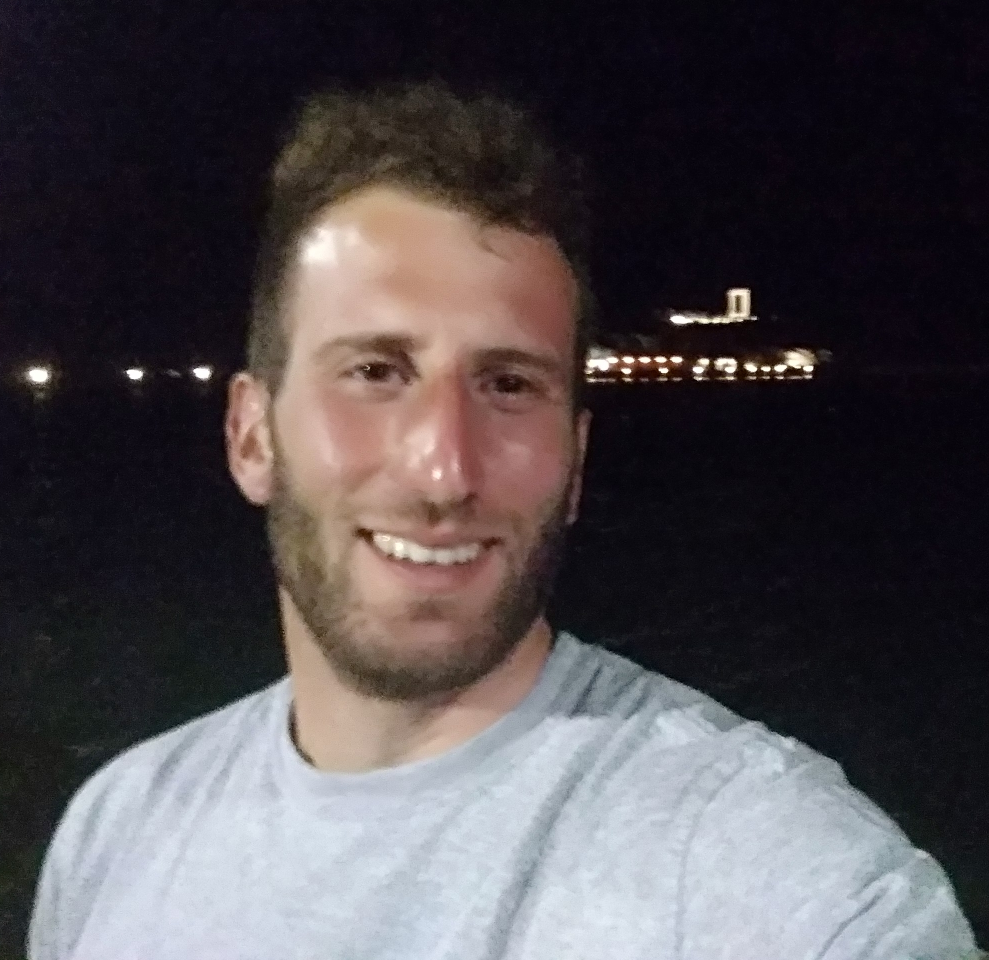

My name is Panagiotis Paschalidis, and I am from Greece. I recently completed a research visit at the University of Amsterdam under the supervision of Prof. Efstratios Gavves. Prior to this, I earned my MSc degree in 2022 from University of Patras, where I had the opportunity to work with Professor Emmanouel Psarakis. For my undergraduate studies, I graduated from the Hellenic Air Force Academy in 2015 with a degree in Telecommunications/Engineering. Between 2015 and 2021, I served as both a Maintenance and Quality Assurance Officer in the Hellenic Air Force, until my resignation to pursue research full-time. My research interests lie in Scene Synthesis, Video Reconstruction, and Generative Models.